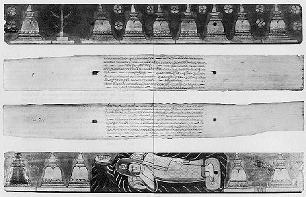

Buddhasasana
Home Page
This document is
written in Vietnamese, with Unicode Times font
Dhammapada
Sutta
(Khuddaka Nikaya - Sutta Pitaka)
Bản Kinh Pháp Cú viết trên lá bối-đa

Theo ông Harischandra Kaviratna (Dhammapada - Wisdom of the Buddha, Theosophical University Press, Pasadena, USA, 1980), đây là tấm ảnh chụp bản Kinh Pháp Cú hiện được lưu trữ tại Viện Bảo Tàng Quốc Gia ở Colombo, Sri Lanka. Bản kinh bằng văn tự Pali viết trên lá bối, mỗi trang có kích thước 45 cm x 6.5 cm, và được xem như là bản cổ xưa nhất của quyển kinh nầy. Bìa kinh làm bằng gỗ, với bìa trước có khắc hình các tháp xá lợi và cây bồ đề nơi Ðức Phật thành đạo. Bìa sau có khắc hình Ðức Phật nhập Ðại Niết Bàn.
[Mục lục
Pháp Cú][Thư mục
Việt ngữ] [Buddhasasana Main Page]
last updated: 07-01-2004